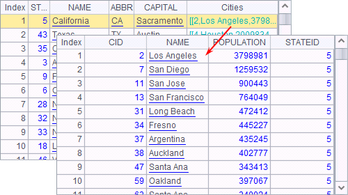
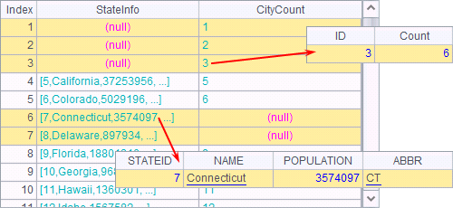
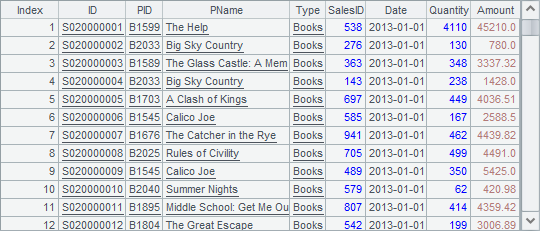
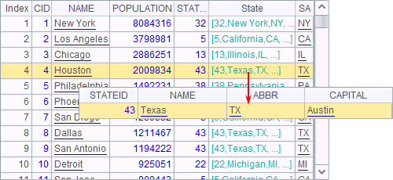

3.5.1 Foreign key field
A.derive() function is used in esProc to add one or more columns to a record sequence. For example:
|
|
A |
|
1 |
=demo.query("select EID, NAME, SURNAME, BIRTHDAY from EMPLOYEE") |
|
2 |
=A1.derive(NAME+" "+SURNAME: FULLNAME, age(BIRTHDAY):AGE) |
A1 retrieves employee information. A2 adds computed columns - FULLNAME and AGE - to A1¡¯s table sequence, returns a new table sequence, and computes the employees¡¯ full names and ages.
Below is the table sequence in A1:

With the computed columns added, A2 gets a new table sequence as follows:

After learning how to add computed columns to a table sequence, we¡¯ll explore the link between the computed columns and creating relationship between tables.
Often relationships exist between two database tables. In esProc the relationship can be expressed by directly referencing the records of a table sequence by another one, making the data search and presentation simple and the data structure clear.
Using A.derive() function, you can add columns to a table sequence and make the data type of the values the records or the record sequences referenced from another table sequence, creating the foreign key for linking the two tables. For example:
|
|
A |
|
1 |
=demo.query("select * from CITIES") |
|
2 |
=demo.query("select STATEID, NAME, ABBR, CAPITAL from STATES") |
|
3 |
=A1.derive(A2.select@1(STATEID==A1.STATEID):State) |
|
4 |
=A3.derive(State.ABBR:SA) |
|
5 |
=A2.derive(A1.select(STATEID==A2.STATEID):Cities) |
A1 and A2 retrieve data from the database tables - CITIES and STATES - respectively:

The CITIES table is related to the STATES table through STATEID field. This kind of storage pattern in databases can keep data consistency, make data easy to maintain and, at the same time, save storage spaces.
A3 adds a State field to CITIES to create a foreign key for storing the records of states in which cities located. For the convenience of later check, A4 continues to add an SA field to CITIES to list abbreviations of these states. A5 adds a Cities field to STATES as the foreign key for storing records of cities in every state.
Execute the program and the data of A4 is as follows:

In the above, the State field contains records of states. You can double-click a value to see details.
Data of A5 is as follows:

The Cities field contains records of cities in each state. Double-click each value to see details.
Through creating foreign keys, both table sequences of A4 and A5 have obtained all information of the two original tables: STATES and CITIES, in the database; relationship between the two tables is established. Note that the data types of these foreign key fields are different. The foreign key State in A4 is record data type while the foreign key Cities in A5 is record sequence (i.e. a sequence of records) data type.
Actually the STATEID field in the STATES table is usually the primary key, through which a second table, like CITIES, can be linked to it using the switch function. For details about the function, refer to Primary Key and Index.